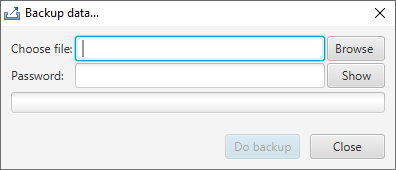

Doing backup is strongly recommended. Backup allow to recover your data when (for instance) you lose or break your token. A backup file can be used at personalization time on an empty token only.
Select the location where the backup will be done and provide a password that will be used to cipher the backup file. After clicking on 'Do backup' button, wait for the 'Data saved !' message before closing the window.